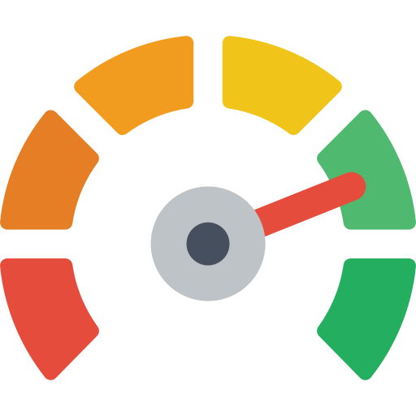

Nós da LATECH, temos como objetivo melhorar o gerenciamento de temperatura e umidade no armazenamento do leite. Acreditamos que a qualidade do produto é fundamental para o sucesso dos produtores. Prezamos pela transparência, ética e confiabilidade e estamos comprometidos com a satisfação do cliente, sempre oferecendo um serviço de qualidade. Nosso objetivo é construir uma relação de confiança e lealdade com nossos clientes.
NOSSO OBJETIVO
A indústria do leite é altamente competitiva, e os produtores enfrentam desafios constantes para garantir a qualidade de seus produtos. O controle de temperatura e umidade é crucial para manter a qualidade do leite, mas é um processo complexo que pode resultar em perdas significativas se não for feito corretamente.
A crescente demanda por leite de alta qualidade exige que os produtores atendam a requisitos cada vez mais rigorosos, o que pode afetar sua reputação e capacidade de atender à demanda. Portanto, é crucial ter sistemas confiáveis de controle de umidade e temperatura para garantir a qualidade do leite e evitar perdas financeiras.


Com nossa ajuda, você pode reduzir os riscos de contaminação e deterioração do leite, melhorar a qualidade e o sabor do produto final e atender aos padrões exigidos pelos consumidores e pela legislação. Nós temos experiência, tecnologia e compromisso com a satisfação dos nossos clientes.
Instalação
- Nossa equipe de instalação realiza uma visita ao local para avaliar as necessidades específicas do produtor de leite.
- Instalamos sensores de alta qualidade em locais estratégicos dentro do armazenamento para monitorar a temperatura e a umidade em tempo real.
- Nosso sistema web é configurado para receber e processar os dados coletados pelos sensores.
Funcionamento
- Os sensores coletam informações de temperatura e umidade do ambiente e dos produtos armazenados.
- Esses dados são enviados para a nuvem, onde são processados por nosso software avançado de gerenciamento.
- O sistema web apresenta as informações coletadas de forma clara e acessível para o produtor, permitindo o monitoramento e controle em tempo real.
Benefícios
- Nossa equipe de instalação realiza uma visita ao local para avaliar as necessidades específicas do produtor de leite.
- Instalamos sensores de alta qualidade em locais estratégicos dentro do armazenamento para monitorar a temperatura e a umidade em tempo real.
- Nosso sistema web é configurado para receber e processar os dados coletados pelos sensores.
| Mês | Ano | Perda anual | |
| Sem nossa solução | R$ 00,00 | R$ 00,00 | R$ 00,00 |
| Com nossa solução | R$ 00,00 | R$ 00,00 | R$ 00,00 |